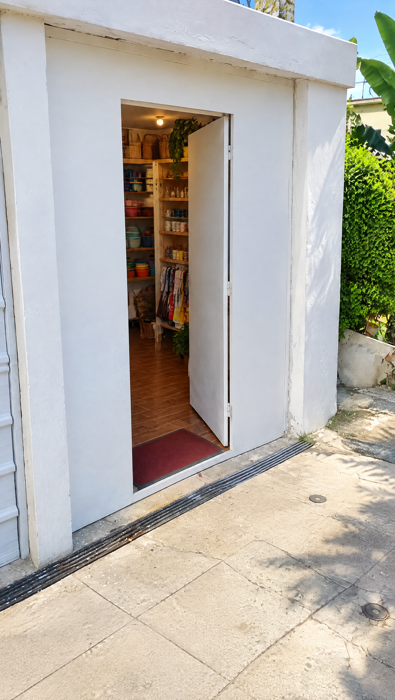
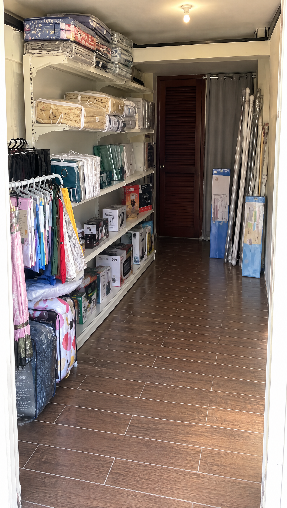
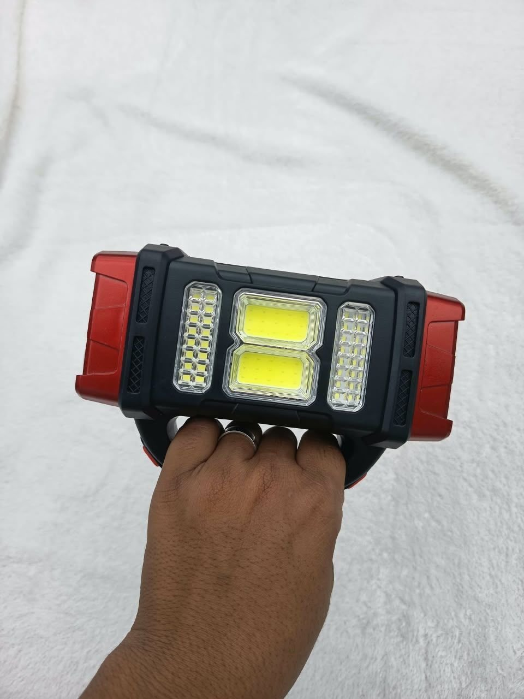
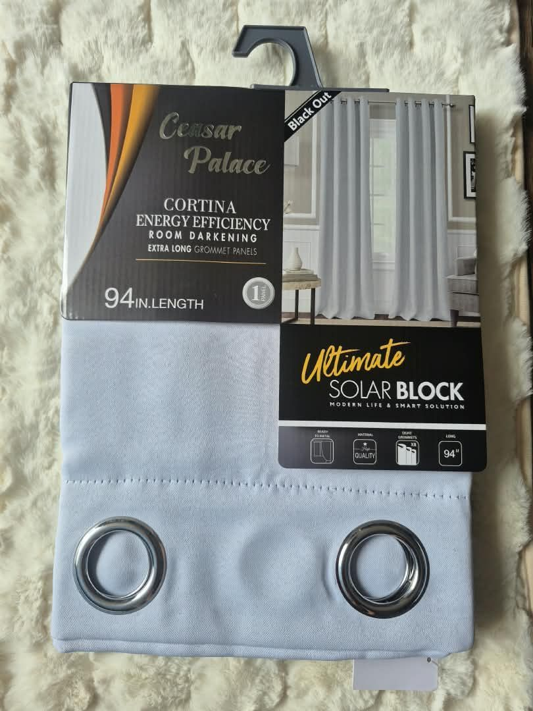
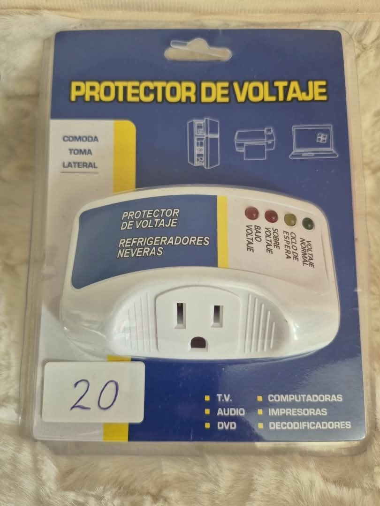
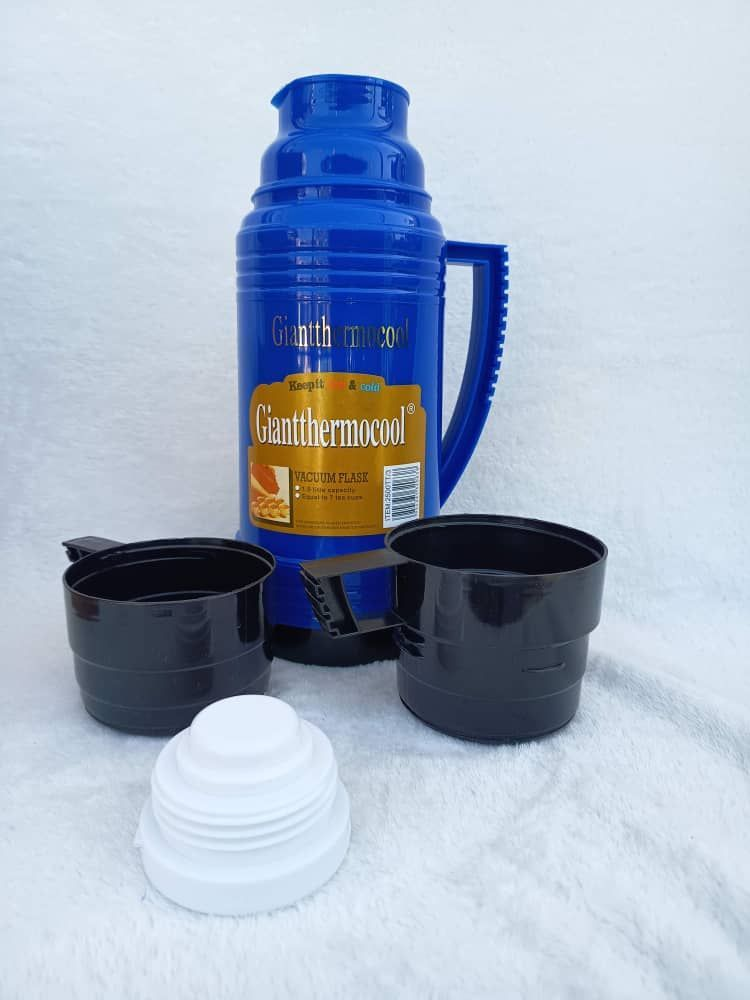
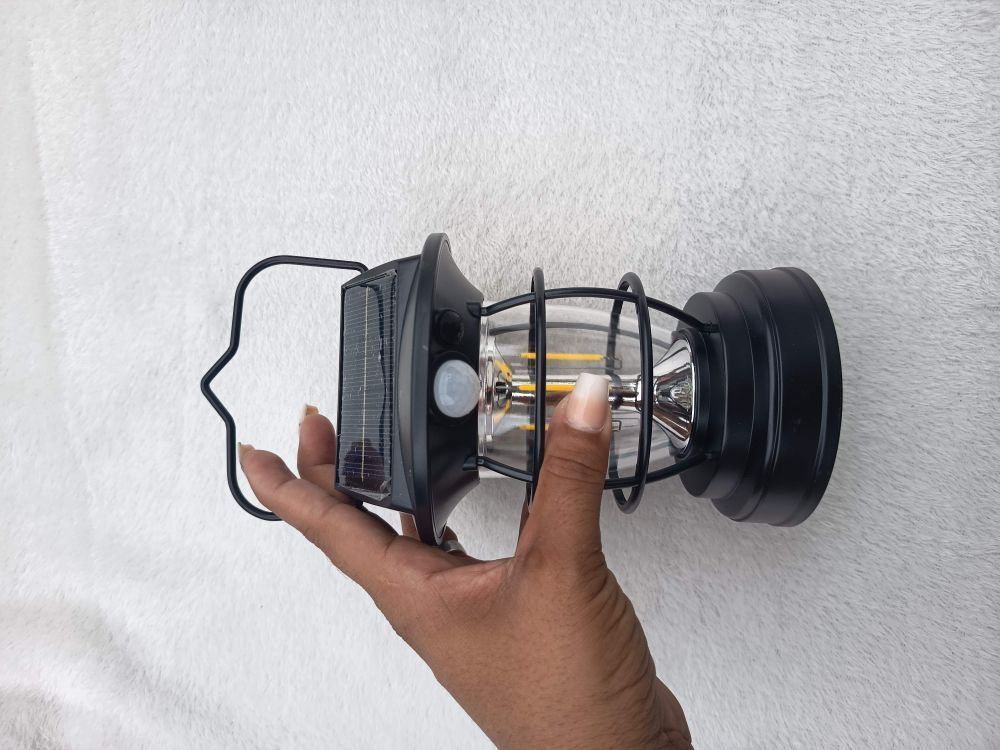
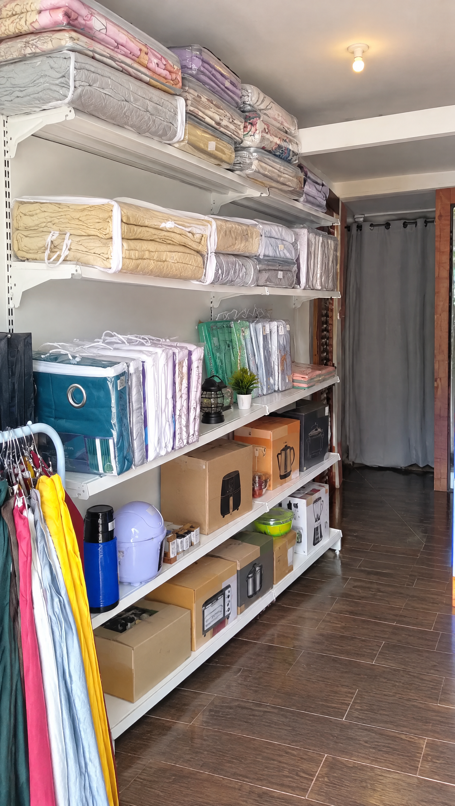
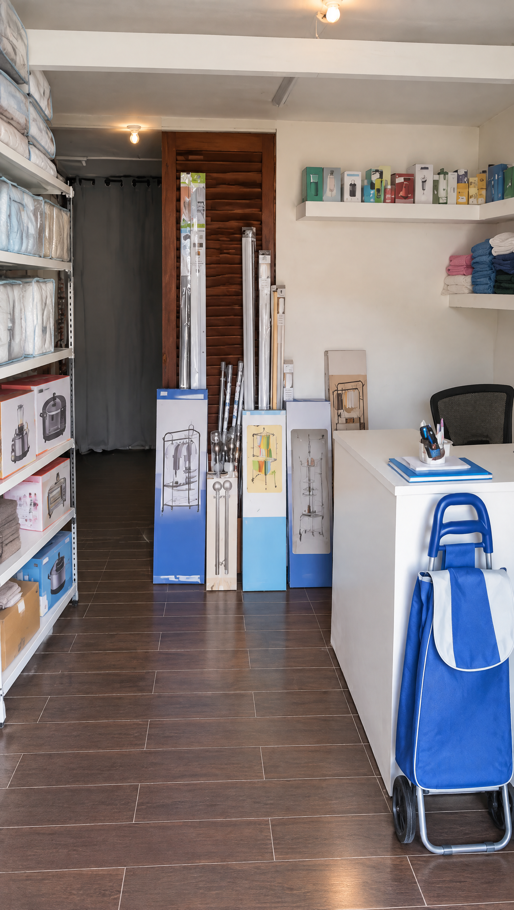
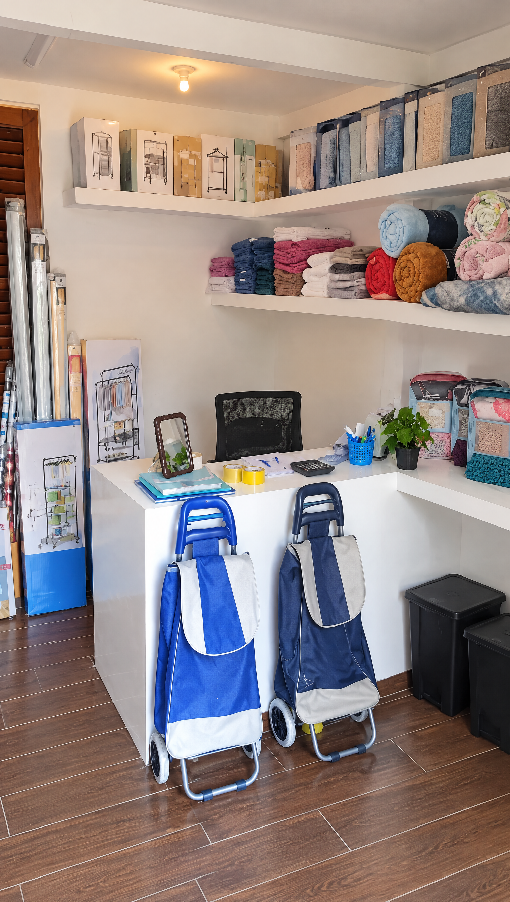

¿Lo cogerías?
Eso no es
SUERTE
Ven,
te enseño
lo que sí
te resuelve


APAGÓN

25 USD
Quedan 2
Lámpara recargable con panel solar
CALOR

31 USD
Cortinas blackout: cuarto más fresco
MÓVIL SIN BATERÍA

30 USD
Quedan 2
Power bank de 10 000 mAh
LA NEVERA EN PELIGRO

20 USD
Queda 1
Protector de voltaje para la nevera
SIN AGUA FRÍA

17 USD
Queda 1
Termo térmico de 1 litro
EL PORTAL A OSCURAS

11 USD
Farol solar con sensor
¡Señor,
se le cayó!
Aquí lo que brilla



Lo revisas
¿Y tú,con 100 USD?
Comenta CIEN
y te decimos qué te resuelve más